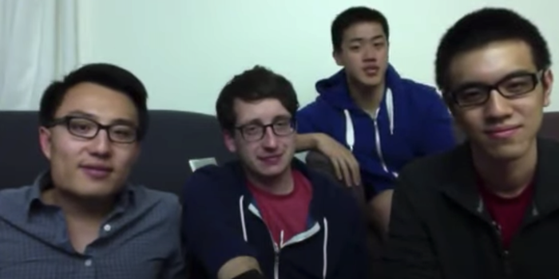

I spent three months working with Andy Fang. He cofounded DoorDash out of a Stanford dorm, and by the time I showed up he had been a billionaire for years. I was on an AI research team; he was close enough that I got to watch how he actually operates, week after week, rather than how profiles say he operates.
I want to be honest about the mechanics of this, because the mythology gets it wrong. It was a rare opportunity, but I'm not part of some impossible cohort. I didn't know anyone. I got the seat the normal way: an application, some interviews, a team that happened to sit near the top of the org. The distance between an ordinary career and a billionaire's orbit is shorter than it looks from outside. That's the zeroth lesson, and nobody tells you it.
Here are the lessons I took, in the order they surprised me.
One: he's tall. Maybe 6'2". None of the profiles mention this. I don't know what to do with the information, but it was genuinely the first thing I wrote down, so in it goes.
Two: hold a stronger thesis, about something unexplored. Most smart people I know have strong opinions about well-mapped territory. They can argue either side of whatever everyone is already arguing about. What I watched instead was conviction pointed at places with no map yet — a willingness to commit hard to a claim nobody had bothered to test, and to be early rather than loud. The thesis wasn't smarter than everyone else's. It was aimed where nobody else was aiming.
Three: it doesn't matter who you are — success is luck. This is a strange thing to learn from a billionaire, because the self-made story is right there and he could just tell it. He doesn't. The framing was always closer to: right market, right timing, right cofounders, and a thousand coin flips that landed. From far away this reads as false modesty. Up close it reads as an operating principle — if success is luck, the job is to maximize the number of times you get to flip the coin. I've written before about people being carried by currents they didn't choose. It turns out the people at the very top believe this more than anyone below them does.
Four: you're only as good as your team. At some altitude there is no individual output left. His calendar was other people. His leverage was other people. The lesson isn't "hire well," which is what the LinkedIn version says. It's that past a certain point you stop having work of your own at all — your output is the team, so the team is the only thing worth being obsessive about.
Five: customer obsession. The most boring lesson, and the one I most expected to be a press-release value rather than a real one. It's real. The detail-level care — about one order, one merchant, one bad delivery — survives ten figures of net worth. I expected the abstraction to have won by now. It hasn't.
None of the last four will surprise you. You could have generated the list without the three months, and honestly, so could I. What the three months bought me is the knowledge that the list is real — that the boring lessons are load-bearing, that the people at the top are actually running them while the rest of us nod at them. The secret is that there is no secret. Which is worse news, because it means the work is just the work.